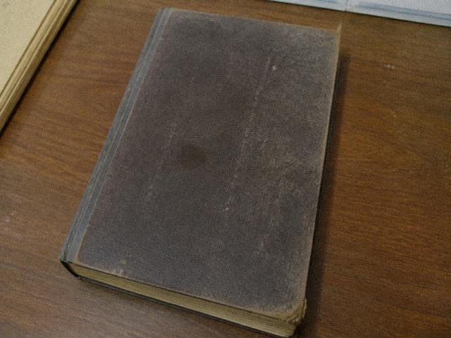

套票名称：槐溪非遗夜戏。剧目《目连》折子「过奈何」。日期八月二十一日。票号当场生成，你这张是 YX-0821-19。
含项：观众席东七排、往返班车位、客栈一晚、后台参观。后台参观写在星号后面，星号说明是文旅加项，不是剧团的座次。
退票：开锣前两小时可退。系统此刻写已开锣，键是灰的。客服吴窗的话术只有一句，别跟她吵开锣两个字。
购票手机号会写入出行名单。名单给车队，也给剧团。剧团拿去干什么，本页不写。你的号是 13972810834。
夜戏与白戏不是同一张票。白戏下午开，不写应工，也不含后台。有人问能不能改挂，窗口说走剧团附则。